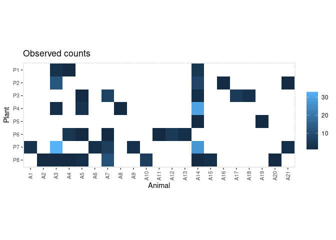
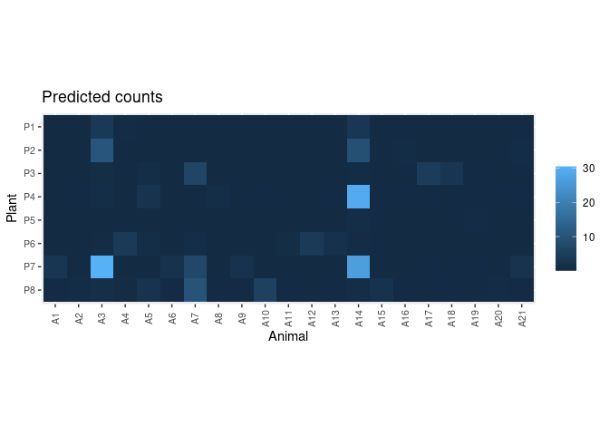
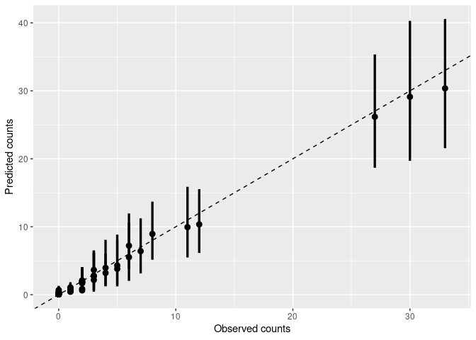
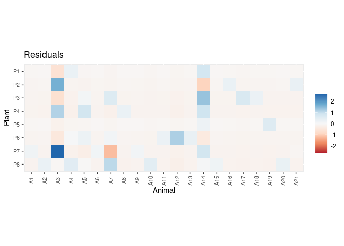

The BayesianWebs R package facilitates modelling bipartite networks (like pollination, frugivory, or herbivory networks) using the Bayesian framework developed by Young et al. (2021).
Inferring the structure of bipartite networks from field (observational) data is a challenging task. Interaction data are hard to collect and require typically large sampling efforts, particularly to characterize infrequent interactions. Inferred network structure is highly sensitive to sampling design, effort, and completeness. Comparing networks from different studies without accounting for these sampling effects may lead to mistaken inferences.
This package uses Bayesian modelling to infer the posterior probability of each pairwise interaction in bipartite networks, accounting for sampling completeness and the inherent stochasticity of field observation data.
Installation
You can install the development version of BayesianWebs from GitHub with:
# install.packages("remotes")
remotes::install_github("Pakillo/BayesianWebs")The package requires a working installation of Stan. If you don’t have CmdStan installed, after installing BayesianWebs run:
cmdstanr::install_cmdstan()Example
Let’s infer the structure of an example dataset from Kaiser-Bunbury et al. 2017 as in Young et al. 2021:
data(web)This is an adjacency matrix collecting the number of visits of 21 animals on 8 plants:
web
#> A1 A2 A3 A4 A5 A6 A7 A8 A9 A10 A11 A12 A13 A14 A15 A16 A17 A18 A19 A20 A21
#> P1 0 0 3 1 0 0 0 0 0 0 0 0 0 4 0 0 0 0 0 0 0
#> P2 0 0 12 0 0 0 0 0 0 0 0 0 0 8 0 1 0 0 0 0 1
#> P3 0 0 0 0 1 0 7 0 0 0 0 0 0 2 0 0 5 3 0 0 0
#> P4 0 0 2 0 3 0 0 1 0 0 0 0 0 30 0 0 0 0 0 0 0
#> P5 0 0 0 0 0 0 0 0 0 0 0 0 0 1 0 0 0 0 1 0 0
#> P6 0 0 0 4 1 0 1 0 0 0 1 5 2 0 0 0 0 0 0 0 0
#> P7 3 0 33 0 0 2 6 0 2 0 0 0 0 27 0 0 0 0 0 0 2
#> P8 0 1 1 1 2 0 11 0 0 6 0 0 0 1 2 0 0 0 0 1 0
plot_counts_obs(web, sort = FALSE)
First, prepare the data for modelling. Here we assume constant sampling effort among plants:
dt <- prepare_data(mat = web, sampl.eff = rep(20, nrow(web)))Now fit the model. There are several models available: the original model used in Young et al. (2021), a model that takes into account varying sampling effort among plants, and a model that allows for varying preferences among animals. The user can also provide a customised Stan model. See fit_model().
Here we run 4 parallel chains:
set.seed(1)
options(mc.cores = 4)
fit <- fit_model(dt, refresh = 0)
#> Running MCMC with 4 parallel chains...
#>
#> Chain 1 finished in 2.9 seconds.
#> Chain 4 finished in 2.9 seconds.
#> Chain 2 finished in 3.0 seconds.
#> Chain 3 finished in 3.1 seconds.
#>
#> All 4 chains finished successfully.
#> Mean chain execution time: 2.9 seconds.
#> Total execution time: 3.4 seconds.Check model:
check_model(fit, data = dt)
#> Processing csv files: /tmp/Rtmpq9vAYS/sampling_effort-202412172000-1-400f5e.csv, /tmp/Rtmpq9vAYS/sampling_effort-202412172000-2-400f5e.csv, /tmp/Rtmpq9vAYS/sampling_effort-202412172000-3-400f5e.csv, /tmp/Rtmpq9vAYS/sampling_effort-202412172000-4-400f5e.csv
#>
#> Checking sampler transitions treedepth.
#> Treedepth satisfactory for all transitions.
#>
#> Checking sampler transitions for divergences.
#> No divergent transitions found.
#>
#> Checking E-BFMI - sampler transitions HMC potential energy.
#> E-BFMI satisfactory.
#>
#> Effective sample size satisfactory.
#>
#> Split R-hat values satisfactory all parameters.
#>
#> Processing complete, no problems detected.

Get the posteriors:
post <- get_posterior(fit, data = dt)
head(post)
#> # A tibble: 6 × 11
#> # Groups: Plant, Animal [6]
#> Plant Animal .chain .iteration .draw connectance preference plant.abund
#> <chr> <chr> <int> <int> <int> <dbl> <dbl> <dbl>
#> 1 P1 A1 1 1 1 0.299 33.0 0.0185
#> 2 P1 A2 1 1 1 0.299 33.0 0.0185
#> 3 P1 A3 1 1 1 0.299 33.0 0.0185
#> 4 P1 A4 1 1 1 0.299 33.0 0.0185
#> 5 P1 A5 1 1 1 0.299 33.0 0.0185
#> 6 P1 A6 1 1 1 0.299 33.0 0.0185
#> # ℹ 3 more variables: animal.abund <dbl>, int.prob <dbl>, link <int>
plot_interaction_prob(post)
Predict interaction counts:
pred.df <- predict_counts(fit, data = dt)
plot_counts_pred(pred.df, sort = FALSE)
Compare observed and predicted counts:
plot_counts_pred_obs(pred.df, data = dt)
Plot residuals:
plot_residuals(pred.df, data = dt, sort = FALSE)
Citation
If you use BayesianWebs please cite it:
citation("BayesianWebs")
If you use BayesianWebs, please cite both Young et al. (2021) and the
package as:
Young J, Valdovinos F, Newman M (2021). "Reconstruction of
plant–pollinator networks from observational data." _Nature
Communications_, *12*, 3911. doi:10.1038/s41467-021-24149-x
<https://doi.org/10.1038/s41467-021-24149-x>.
Rodriguez-Sanchez F (2024). _BayesianWebs: Bayesian Modelling of
Bipartite Networks_. <https://pakillo.github.io/BayesianWebs/>.
To see these entries in BibTeX format, use 'print(<citation>,
bibtex=TRUE)', 'toBibtex(.)', or set
'options(citation.bibtex.max=999)'.